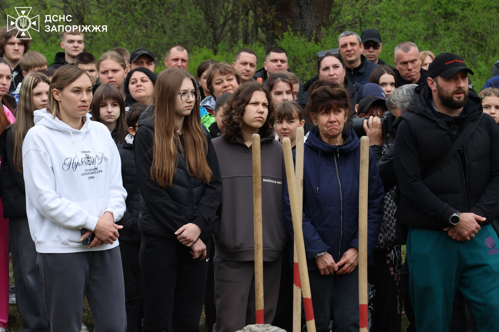

З чого все починалося
Занедбана територія
Влітку 2025 року ворожі обстріли та пожежі знищили значну частину Хортиці. Там, де роками зростали дерева, залишилися згарища, чагарник і сміття.
Саме серед цієї руїни народилася ідея — не просто прибрати, а відродити. Повернути парку життя власними руками.